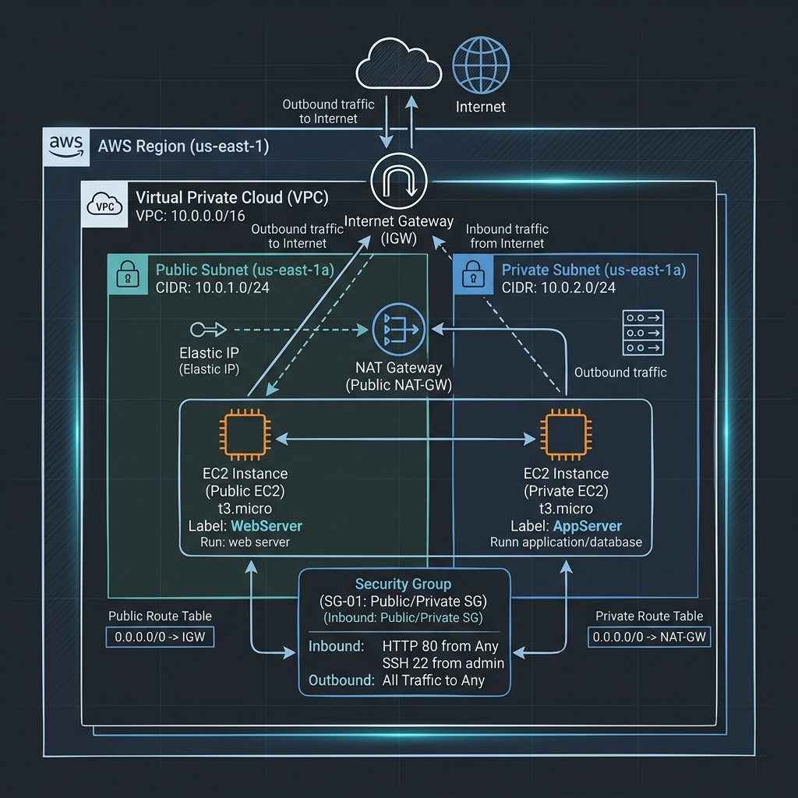

VPC (Virtual Private Cloud) の基本
- AWS内に定義する独立した仮想ネットワーク
- リージョン単位のサービス（複数のAZにまたがる）
- IPアドレス範囲（CIDR）を自由に定義可能

VPCは、オンプレミスのデータセンターで運用するネットワークと非常によく似た、AWSクラウド内の仮想ネットワークです。自分専用の隔離された環境で、サーバー（EC2）やデータベース（RDS）を安全に配置できます。
ポイントは、「リージョン」の中に作成することです。東京リージョンにVPCを作れば、その中のすべてのアベイラビリティーゾーン（AZ）でリソースを配置できます。
サブネットとCIDR
- CIDR: ネットワークの大きさを指定（例: 10.0.0.0/16）
- サブネット: VPCを分割した単位。特定のAZに紐付く
- パブリック/プライベート: インターネット通信の可否による分類
VPCの広大なIPアドレス空間を、用途やセキュリティレベルに応じて「サブネット」という小さな単位に切り分けて管理します。
- パブリックサブネット: インターネットゲートウェイ（IGW）へのルートを持ち、外部と直接通信するWebサーバーなどを配置します。
- プライベートサブネット: インターネットから直接アクセスできない安全な環境。データベースやバックエンドサーバーを配置します。
※AWSのサブネットでは、各範囲の最初と最後の合計5つのIPアドレスが予約されており、ユーザーは使用できません（例: .0, .1, .2, .3, .255）。
ルートとゲートウェイ
- ルートテーブル: トラフィックの行き先を定義
- IGW: VPCをインターネットに接続するための入り口/出口
- NAT GW: プライベート側からのみインターネットへの一方通行を許可
パブリックサブネットを機能させるには、ルートテーブルで「0.0.0.0/0（すべての外部通信）」を「インターネットゲートウェイ（IGW）」に向ける設定が必要です。
一方、プライベートサブネットにあるサーバーが、外部のアップデート情報を取得したい場合は、パブリックサブネットに配置したNAT ゲートウェイを経由させることで、セキュアな一時的通信を確保します。
ネットワークセキュリティ
| 比較項目 | セキュリティグループ (SG) | ネットワーク ACL (NACL) |
|---|---|---|
| レベル | インスタンス（ENI）単位 | サブネット単位 |
| 状態保持 | ステートフル（戻り自動許可） | ステートレス（戻りもルール必要） |
| ルールの種類 | 許可のみ | 許可 / 拒否 |
AWSのネットワークセキュリティは、多層防御の考え方に基づいています。
- セキュリティグループ: 最初の防御線。特定のポート（80, 443, 22など）だけを開ける設定に使用します。
- ネットワーク ACL: サブネット全体の番人。特定のIPアドレスからの攻撃を完全に遮断（Deny）したい場合などに有効です。